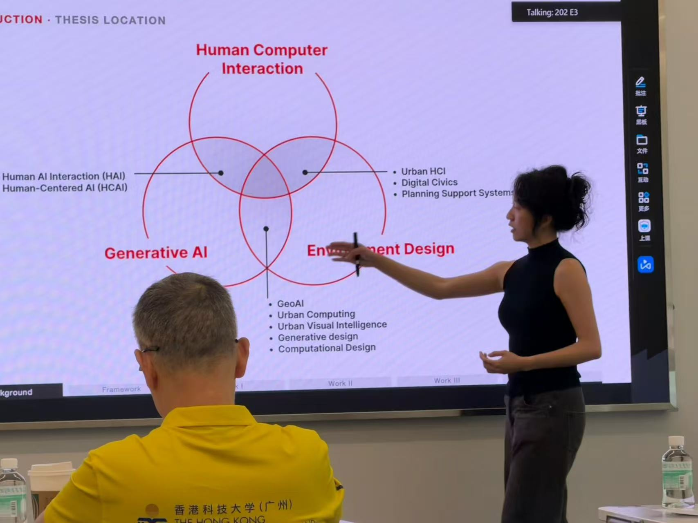
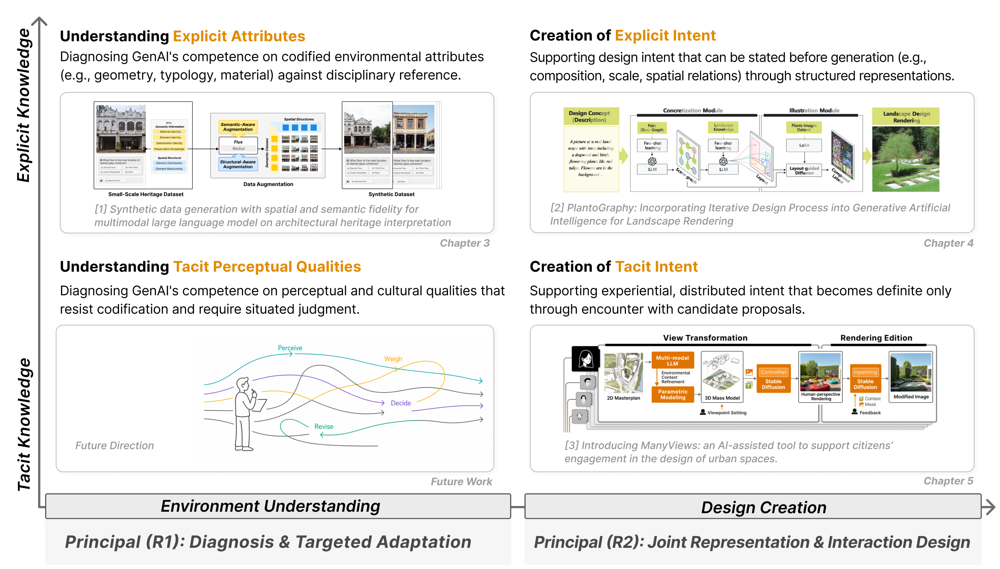
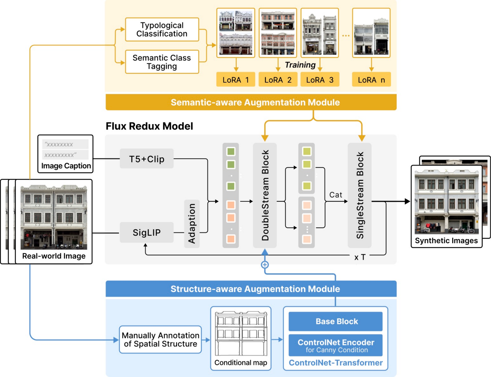
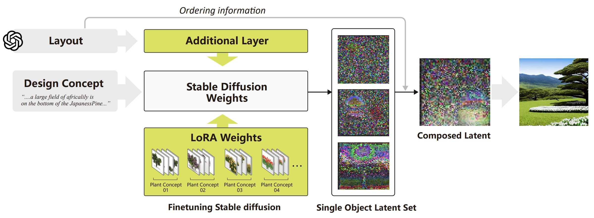
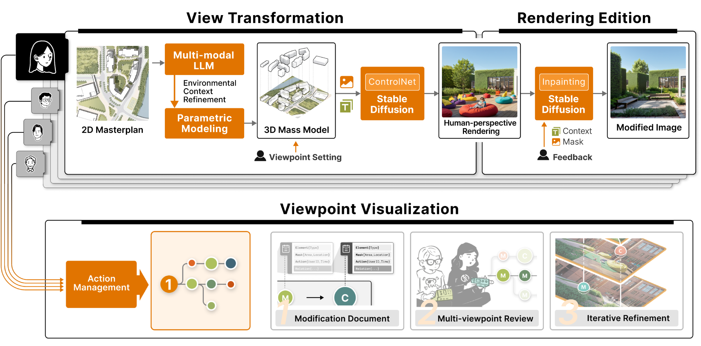
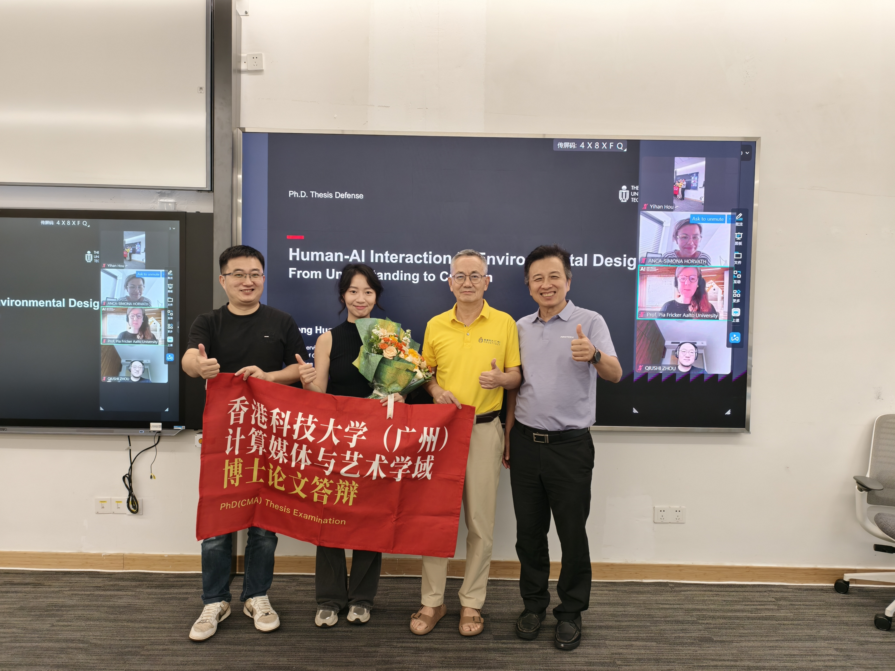

2026年8月4日，香港科技大学（广州）信息枢纽计算媒体与艺术学域博士研究生黄镕同学顺利完成博士学位论文答辩。黄镕同学的博士论文题目为《Human-AI Interaction in Environmental Design: From Understanding to Creation》，由曾伟教授和张康教授联合指导。答辩委员会对黄镕同学的研究工作给予了高度评价，一致同意通过其博士学位论文答辩。
环境设计塑造了人们居住、通行和传承的建成环境空间。这一设计过程通常在两个阶段之间展开：理解现有环境，以及创造理想空间。随着生成式人工智能（GenAI）的快速发展，研究者期望AI能够在两个阶段同时提供支持。然而，通用GenAI在环境设计的两个阶段都存在错配问题——在理解阶段，AI的输出缺乏学科参照的准确性；在创造阶段，AI难以忠实承载设计师的设计意图。如何让通用GenAI与人类的设计知识对齐，成为环境设计领域的核心挑战。

针对这一挑战，黄镕同学提出了一个二维概念框架来系统地思考这一对齐问题。框架的阶段轴关注设计知识在哪个阶段被使用——是环境理解阶段还是设计创造阶段；知识轴关注设计知识以何种形式存在——是可编码对照的显式知识，还是需要在交互中逐步明确的隐式知识。两条轴交叉形成四个象限，每个象限对应一种对齐策略。论文选取其中三个象限各开展一项研究进行实例化，形成了从"诊断—适配"到"表示—交互"的完整研究路径。

第一项工作聚焦于建筑遗产解读中的显式设计知识。建筑遗产的解读依赖于可对照编码化参考进行验证的属性（如类型、材料、形态），而通用多模态大语言模型常常误读这些属性。黄镕同学提出了"诊断—适配"的两阶段方法：先诊断模型在各类建筑属性上的错误模式，再通过保真度驱动的数据增强进行针对性微调——从真实建筑立面出发生成合成数据，在保持空间结构和语义逻辑的前提下扩充训练样本，使模型在标注稀缺的遗产领域也能有效学习。成果发表于npj Heritage Science（2026）。

第二项工作PlantoGraphy针对景观设计中可显式表达的设计意图。景观设计师需要指定植物种类、数量、排列、尺度和相对位置，并通过反复反馈进行调整，但端到端的AI生成无法提供验证和修改的界面。PlantoGraphy定义了场景图和布局两种中间表示来外化设计意图，通过少样本学习将文本描述转化为结构化场景图和空间布局，再通过在景观图像上微调的扩散模型进行渲染，并支持实例级别的潜在合成和区域化重生成。14位设计师的用户研究表明，该系统有效提升了对植物排列和空间关系的控制力。成果发表于ACM CHI（2024）。

第三项工作ManyViews关注城市设计中居民的体验式、分布式设计意图。与前两项工作不同，这类意图无法事先陈述，只有在面对候选方案时才能被识别和明确。ManyViews通过三个阶段将鸟瞰总平面图转化为人视角渲染：环境信息推理、体量模型构建和渲染生成，并支持圈选区域的自由编辑和工作流图记录。市民可以围绕方案进行反应、修改和迭代，让隐性意图在交互过程中逐渐变得可表达。成果发表于International Journal of Human-Computer Studies（2026）。

论文的核心洞见在于：AI输出的对齐取决于其所依据的参照——不再笼统地问"模型总体表现好不好"，而是问"模型的输出是否对这项设计任务中真正重要的参照负责"。对于隐性知识，通过对保留识别和修改空间的表示与交互设计，同样可以实现对齐。这一发现对GenAI在设计领域的应用具有重要的理论和实践意义。
祝贺黄镕同学顺利通过博士论文答辩！🎉 感谢答辩委员会各位专家的悉心指导与宝贵建议。黄镕同学的研究工作在人机交互与人工智能领域顶级会议和期刊上发表了多篇高水平论文，展现了港科广CIVAL课题组在"AI+设计"交叉领域的研究实力。祝愿黄镕同学在未来的学术道路上继续发光发热，前程似锦！🎓